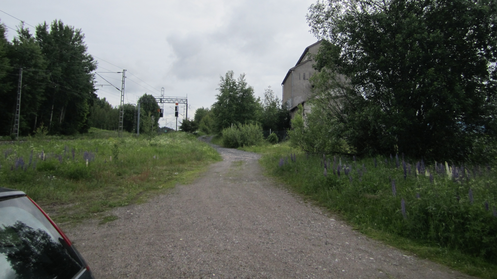

| västerut |
söderut |
österut |
TOC |
index |
A32 |
Jorvas bildar knutpunkten mellan banorna mot Helsingfors, Karis/Stockholm och Tallinn. Utöver detta möts här även Jorvasvägen (väg 51 och kanske i framtiden väg E18) och Ring III (väg 50). Detta gör Jorvas till en ypperlig knutpunkt för både väg och järnvägs trafik. Utöver detta är Jorvas, enligt dessa initiativ, även pålastningsstation för biltransport skytteln till Tabasalu/Estland.
Resenärer från Tallinn området som skall till Stockholm åker tåg till Tabasalu och genom Nargö-Porkkala tunneln till Jorvas. I Jorvas byter tåget färdriktning och fortsätter mot Karis och Stockholm. Alternativt så byter resenärerna tåg för att fortsätta mot Stockholms området.
Enligt nuvarande planer skall Baltic Rail byggas med normal spårbredd och här som initiativ föreslås att kustbana Karis-Jorvas-Esbo skall ha normalspårbredd för att kunna integreras via Kapellskär-Karis banan till det svenska spårvägsnätet.
Utöver detta, så som syns av kartan, kan tåg från Estland även ta Porkkala genvägen och ej köra via Jorvas. Lösningen för tåg som kör genvägen har givits namnet Revals expressen. Existensen av Porkkala genvägen beror på beslutsfattarna och om det finns tillräckliga ekonomiska orsaker att bygga.
